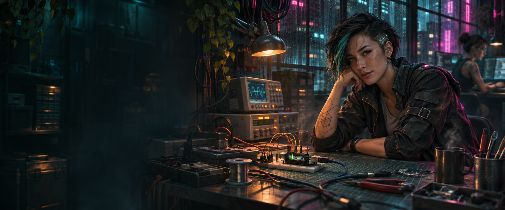

A LITTLE LIGHT IN THE NIGHT
我在学习 Arduino 和嵌入式开发。这里记录电路、代码和探索，也练习用英语分享想法，认识热爱创造的人。
CHOOSE YOUR FREQUENCY
专注创造，也自在交流。
电路、代码、调试。把好奇心变成一个能运行的作品。
从一句问候开始，用英语分享项目，也聊聊你的世界。
FIELD NOTES / 实验日志
目标、现象、排错、下一步。把做完的练习写成一条可复盘的记录，也把真实的学习过程留给未来的自己。